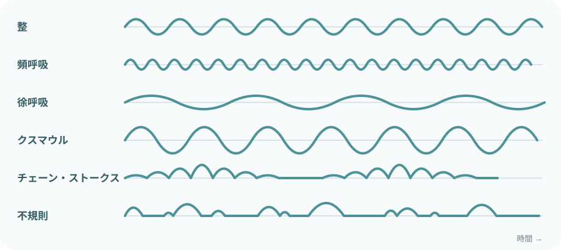
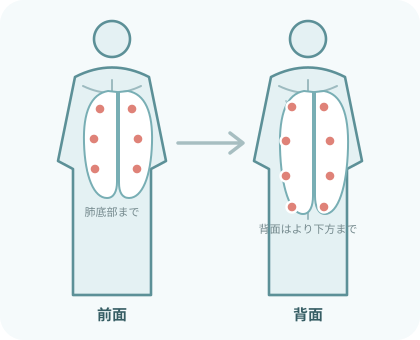
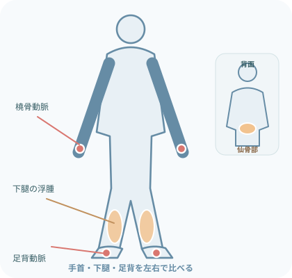

最初に見る
- 見る表情・姿勢・皮膚色
- 聞く会話・呼吸音・訴え
- 触れる脈・冷感・発汗
- 測る呼吸・脈拍・血圧・SpO₂・体温
- 比べる普段・前回・対応後
急な変化
- 全部測り終える前でも応援要請
- 生命に関わる異常から対応
- 対応後はもう一度評価
基本のバイタルサイン
- 現在いまの値・症状
- 基準その人の普段
- 経過前回からの変化
- 条件体位・活動・酸素・薬剤
成人の一般的な観察を中心に整理。目標値・報告基準・測定間隔は、指示と院内手順を優先する。
Breathing
呼吸をみる
見た目
- 会話できるか
- 楽な姿勢か
- 胸郭の左右差
- 口唇色・顔色
呼吸数
- 1分間の回数
- 深さ・リズム
- 安静時か
- 前回値との差
努力呼吸
- 肩呼吸
- 補助呼吸筋
- 陥没呼吸
- 鼻翼呼吸
一緒にみる
- SpO₂
- 咳・痰
- 意識
- 酸素デバイス・流量
呼吸様式

- 頻呼吸速い
- 徐呼吸遅い
- クスマウル呼吸深く大きい
- チェーン・ストークス呼吸増減と無呼吸を反復
- 不規則呼吸間隔・深さが不ぞろい
呼吸音

- 衣服を避ける
- 一か所ずつ左右を比較
- 吸気・呼気を確認
- 弱い・聞こえない部位
- 咳の前後で変わるか
- fine crackles
- 細かい断続音
- coarse crackles
- 粗い断続音
- wheezes
- 高い連続音
- rhonchi
- 低い連続音
- stridor
- 上気道の狭窄音
音だけで原因を決めない。呼吸状態・痰・咳・SpO₂と合わせる。
SpO₂
- 値
- 波形・脈拍表示
- 末梢冷感
- 体動
- 装着部位
- 酸素投与
- 目標値
- 経時変化
数値だけで安心しない
呼吸数、努力呼吸、会話、意識も確認。酸素は処方された目標範囲へ調整する。
呼吸数、努力呼吸、会話、意識も確認。酸素は処方された目標範囲へ調整する。
Circulation
循環と水分バランスをみる
脈拍
- 回数
- リズム
- 強さ
- 左右差
血圧
- 普段・前回値
- 体位・測定部位
- カフサイズ
- 症状との一致
末梢循環
- 皮膚色
- 冷感・発汗
- 毛細血管再充満
- 末梢動脈
症状
- 胸痛・動悸
- めまい
- 呼吸困難
- 意識変化

浮腫
- 部位・範囲
- 左右差
- 圧痕の有無
- 発赤・熱感・疼痛
- 体重変化
- 尿量
- 呼吸困難
浮腫だけで原因を決めない。心・腎・肝機能、静脈還流、栄養、薬剤も確認。
尿量・IN-OUT
- 時間尿量・1日量
- 尿の色・混濁・血液
- 飲水・輸液
- 排液・便・嘔吐
- 体重・浮腫
CVP
- 値・波形・推移
- 体位・ゼロ点
- 呼吸・胸腔内圧
- 陽圧換気の有無
- 血圧・尿量・浮腫
単独で循環血液量や輸液反応性を決めない。
Disability
意識・神経をみる
まず確認
- 呼びかけへの反応
- 会話
- 見当識
- 普段との違い
JCS
- 0：清明
- I：刺激なしで覚醒
- II：刺激で覚醒
- III：刺激でも覚醒しない
GCS
- E：開眼
- V：言語反応
- M：運動反応
- 合計＋内訳
瞳孔・神経
- 瞳孔径・左右差
- 対光反射
- 麻痺・感覚
- 構音・痙攣
言語・聴力・挿管・鎮静・既往による評価の難しさも記録。急な意識変化では、呼吸・循環・血糖も同時に確認する。
Exposure
体温と全身状態をみる
体温
- 値・測定部位
- 測定方法・時刻
- 前回値
- 解熱・保温後
熱・冷え
- 悪寒・戦慄
- 発汗
- 熱感・冷感
- 室温・寝具
皮膚
- 色・発赤
- 発疹・出血
- 傷・圧迫
- 乾燥・湿潤
苦痛
- 疼痛部位
- 程度・性質
- 増悪・軽減
- 対応後の変化
必要な範囲を観察。羞恥心に配慮し、熱を逃がしすぎない。
急な変化はABCDE
- A気道発声・閉塞音・異物
- B呼吸呼吸数・胸郭・SpO₂・呼吸音
- C循環脈拍・血圧・皮膚・出血
- D意識反応・瞳孔・血糖・麻痺
- E全身体温・皮膚・外傷・疼痛
異常を見つける応援を呼ぶ対応する再評価する
報告・記録
- いつ測定・発症時刻
- どこで体位・活動・処置中
- 何が値・症状・所見
- どれくらい普段・前回との差
- 何をした対応・報告先
- その後再測定・反応
出典
- NICE：Acutely ill adults in hospital
- Royal College of Physicians：NEWS2
- Resuscitation Council UK：The ABCDE Approach
- British Thoracic Society：酸素療法ガイドライン
- Open RN Nursing Skills：呼吸器の観察
- Open RN Nursing Skills：循環器・末梢血管の観察
- European Respiratory Society Task Force：呼吸音の用語
- 太田富雄ほか：急性期意識障害の新しいGradingとその表現法
- Glasgow Coma Scale：Structured Approach
- Marikほか：CVPと輸液反応性の系統的レビュー
学習用の整理。実際の評価・報告・対応は、患者ごとの指示、院内基準、使用機器の手順を優先する。